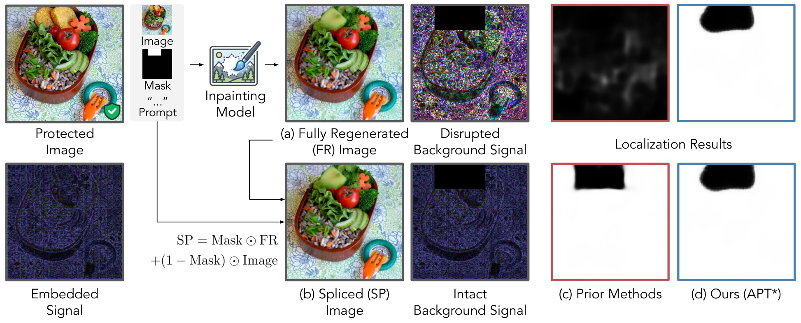
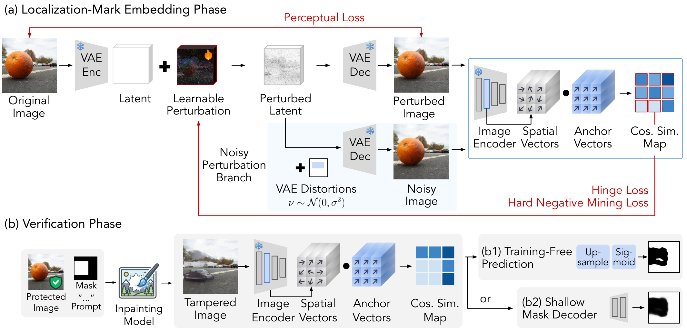
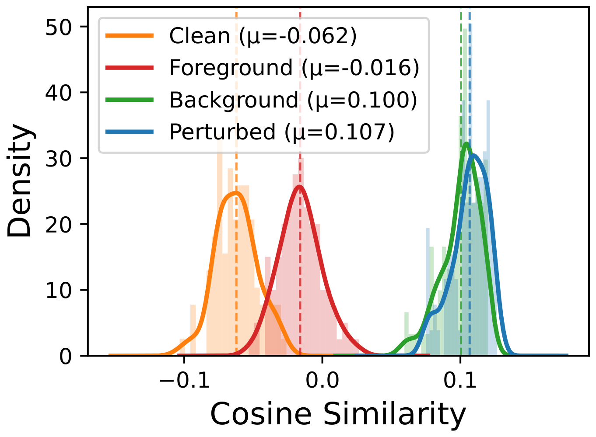
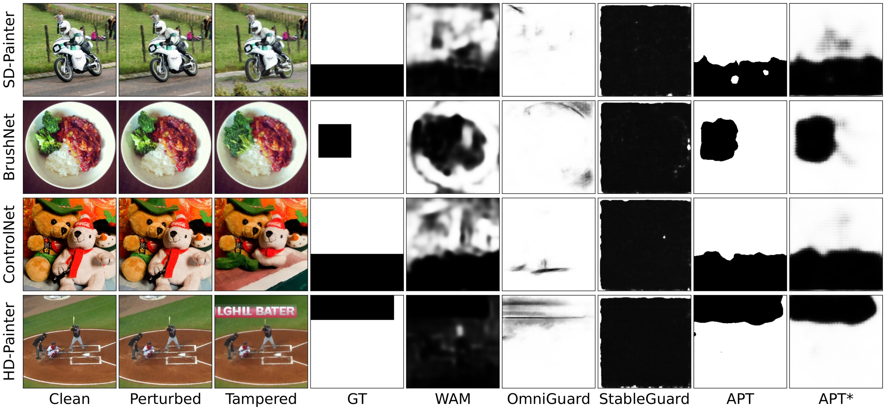
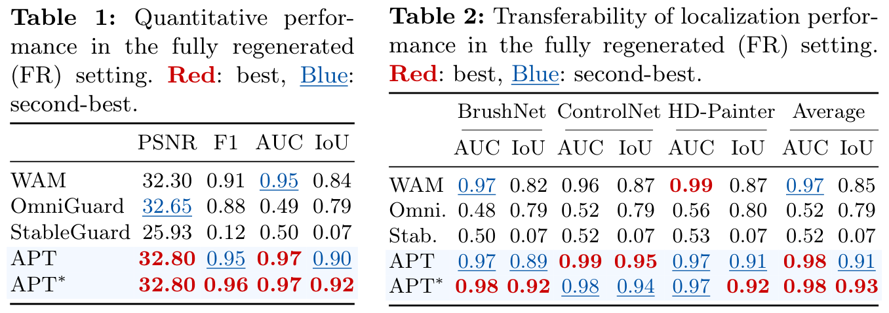

Links will be available soon.

Diffusion inpainting fully regenerates (FR) the image, disrupting the background signal that prior methods rely on. Ours still localizes the tampered region, whereas prior methods fail under FR.
TL;DRA semi-fragile latent-space perturbation that localizes tampering even when the entire image is regenerated by diffusion inpainting.
Proactive tamper localization embeds an imperceptible signal into an image prior to distribution, enabling pixel-level manipulation detection. Existing methods assume a spliced (SP) setting, where synthesized regions are composited onto the original background, leaving embedded signals intact. However, real-world diffusion-based inpainting operates in a fully regenerated (FR) setting, where the entire image undergoes denoising, disrupting background signals and rendering existing frameworks ineffective.
We propose APT, a semi-fragile latent-space perturbation that embeds a dense, vector-wise localization signal. By aligning each spatial feature vector toward a fixed anchor direction, APT localizes tampering via the alignment disparity between synthesized foreground and anchor-aligned background features after inpainting. The proposed hard negative mining loss and noisy perturbation branch further enforce uniform alignment.
Experiments on COCO demonstrate that APT achieves an FR IoU of 0.92, outperforming the strongest baseline (WAM, 0.84), while existing methods collapse to near-random performance (AUC ≈ 0.5), establishing APT as a practical forensic framework generalizable across tampering types unknown at test time.

(a) Localization-Mark Embedding: a learnable latent perturbation aligns each spatial feature vector toward a fixed anchor direction. (b) Verification: a potentially tampered image is encoded into per-vector anchor-alignment maps, which produce a pixel-level localization mask via either training-free prediction or a shallow mask decoder.
APT embeds an anchor-aligned latent perturbation: it optimizes only a perturbation in the VAE latent space so that every spatial feature vector aligns with a fixed anchor direction.

This yields an alignment disparity: after inpainting, the regenerated background stays highly aligned with the anchor (μ = 0.10), nearly identical to the perturbed image (μ = 0.107), while the synthesized foreground (μ = −0.016) collapses to the low alignment of clean, unmarked features (μ = −0.062). Tampering is thus directly readable from the cosine-similarity map.

Localization under fully-regenerated inpainting (SD-Painter, BrushNet, ControlNet, HD-Painter). Baselines collapse to degenerate masks; APT and APT* stay sharp and accurate on tampering types unseen at test time.

Left (Table 1): FR localization on SD-Painter — APT∗ reaches 0.92 IoU while baselines collapse (AUC ≈ 0.5). Right (Table 2): transferability across BrushNet, ControlNet, and HD-Painter — APT∗ holds an average 0.98 AUC / 0.93 IoU.
Citation will be available after the proceedings are published.